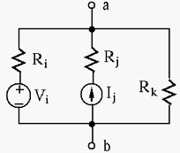

Next: Circuit Theorems Up: Chapter 2: Circuit Principles Previous: Chapter 2: Circuit Principles
Example 1: Find the three unknown currents ( ) and three unknown voltages ( ) in the circuit below:
Note: The direction of a current and the polarity of a voltage can be assumed arbitrarily. To determine the actual direction and polarity, the sign of the values also should be considered. For example, a current labeled in left-to-right direction with a negative value is actually flowing right-to-left.
All voltages and currents in the circuit can be found by either of the following two methods, based on KVL or KCL respectively.
 independent loops in the circuit, define a
loop current around the loop in clockwise (or counter clockwise)
direction. These loop currents are the unknown variables to
be obtained.
equations. While calculating the voltage
drop across each resistor shared by two loops, both loop currents
(in opposite positions) should be considered.
equations for the unknown
loop currents.
independent loops in the circuit, define a
loop current around the loop in clockwise (or counter clockwise)
direction. These loop currents are the unknown variables to
be obtained.
equations. While calculating the voltage
drop across each resistor shared by two loops, both loop currents
(in opposite positions) should be considered.
equations for the unknown
loop currents.
Find currents  from a to b,
from a to b,  from c to b, and from
b to d.
from c to b, and from
b to d.
 |
|||
|
(1) |
| (2) |
|
|||
|
|||
|
 |
(3) |
|
|||
|
(4) |
| (5) |
 nodes in the circuit. Select one of them
as the ground, the reference point for all voltages of the circuit.
The node voltage at each of the remaining
nodes in the circuit. Select one of them
as the ground, the reference point for all voltages of the circuit.
The node voltage at each of the remaining  nodes is an unknown
to be obtained.
nodes to set the sum of all
currents into the node to zero, and get equations.
equations for the
unknown node voltages.
nodes is an unknown
to be obtained.
nodes to set the sum of all
currents into the node to zero, and get equations.
equations for the
unknown node voltages.
In the same circuit considered previously, there are only 2 nodes  and
and  (
( and
and  are not nodes). We assume node is the ground,
and consider just voltage
at node
are not nodes). We assume node is the ground,
and consider just voltage
at node  as the only unknown in
the problem. Apply KCL to node , we have
as the only unknown in
the problem. Apply KCL to node , we have
| (6) |
| (7) |
, , and into the equation, we get
| (8) |
We could also apply KCL to node d, but the resulting equation is exactly the same as simply because this node d is not independent.
As special case of the node-voltage method with only two nodes, we have the following theorem:
If there are multiple parallel branches between two nodes and ,
such as the circuit below (left), then the voltage  at node can
be found as shown below if the other node is treated as the reference
point.
at node can
be found as shown below if the other node is treated as the reference
point.
Assume there are three types of branches:
 sources in series with
sources in series with  . The
polarity of each is + on the node a side.
. The
polarity of each is + on the node a side.
 (independent of resistors in series).
The direction of each is toward node a.
(independent of resistors in series).
The direction of each is toward node a.
Applying KCL to node , we have:
| (9) |
, we get
| (10) |

The dual form of the Millman's theorem can be derived based on the loop circuit on the right. Applying KVL to the loop, we have:
| (11) |
 , we get
, we get
| (12) |
Example 2: Solve the following circuit:
| (13) |
| (14) |
Example 3: Solve the following circuit with  , ,
,
, ,
,
 ,
,
. This circuit
has 3 independent loops and 3 independent nodes.
,
,
. This circuit
has 3 independent loops and 3 independent nodes.
Assume three loop currents (left), (right), (top) all
in clock-wise direction. We take advantage of the fact that the current
source is in loop 1 only, with loop current
, and get the
following two (instead of three) loop equations with 2 unknown loop
currents and :
| (15) |
| (16) |
Assume the three node voltages with respect to the bottom node treated
as ground to be  (left),
(left),  (middle),
(middle),  (right). We take
advantage of the fact that one side of the voltage source is treated
as ground, and get the note voltage
. Then we have only two
(instead of three) node equations with 2 unknown node voltages and
:
(right). We take
advantage of the fact that one side of the voltage source is treated
as ground, and get the note voltage
. Then we have only two
(instead of three) node equations with 2 unknown node voltages and
:
| (17) |
| (18) |
In other words, to simplify the analysis, it is preferable to
Example 4: In the circuit below, , ,
,
,
,
.
Find all node voltages with respect to the top-left corner treated
as the ground. Then do the same when the middle node where all three
resistors  ,
,  , and
, and  join is treated as ground is treated
as the ground.
join is treated as ground is treated
as the ground.
Example 5: The two circuits shown below are equivalent, but you may want to choose wisely in terms of which is easier to analyze. Solve this circuit using both node voltage and loop current methods. Assume , , , , , and .